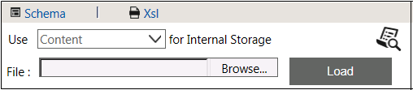

No
An XML Variable of type XML Document can be used to fetch the required items.
XML Variable of type 'XML Document':
When the variable type is 'XML Document', the following properties are displayed as seen in the image below.

Property Description:
XML Variable Property |
Description |
Internal Storage |
This property is used to specify the internal storage type of the XML Variable.
|
File |
Location of the schema file, if any XML schema is available. Otherwise user can create the schema using Schema designer. |